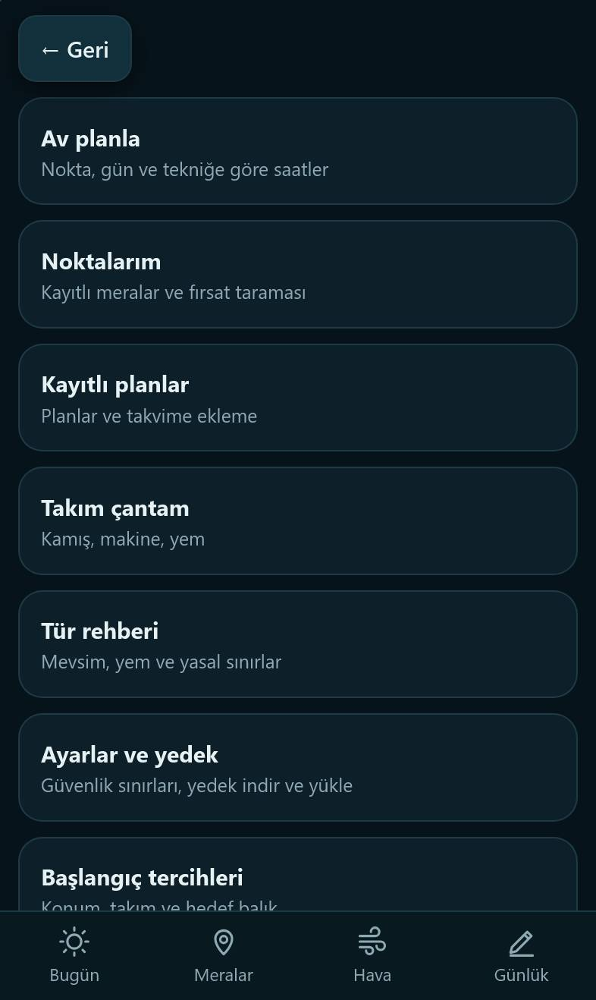
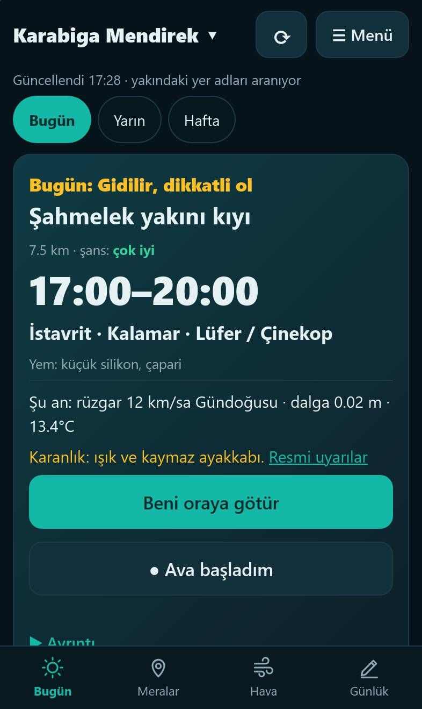
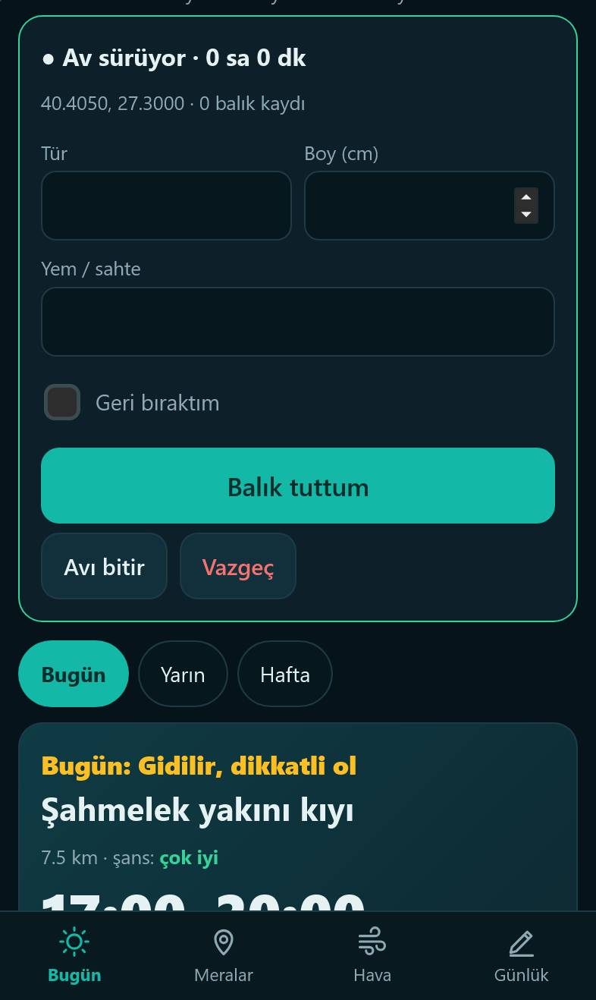
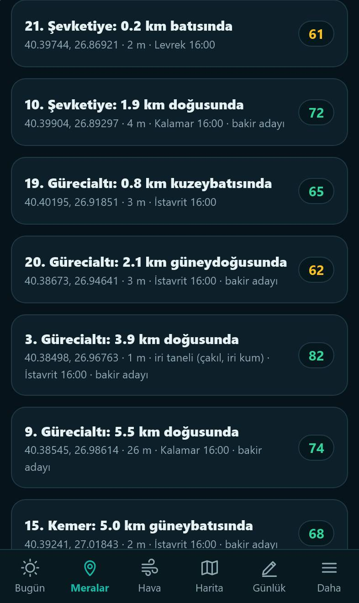
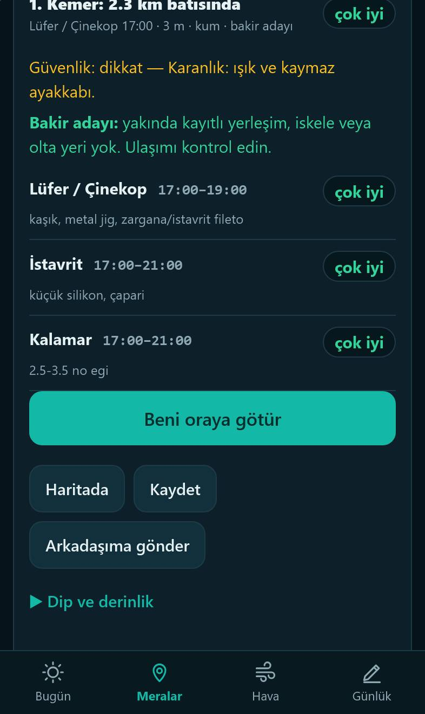
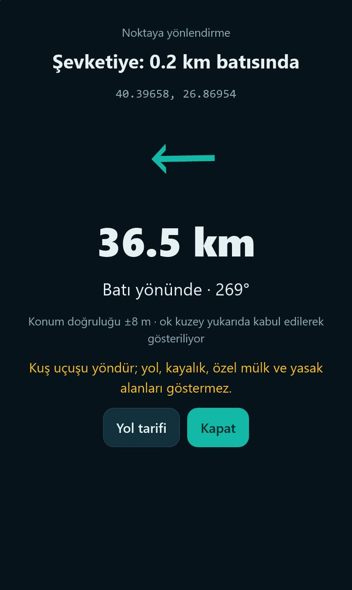
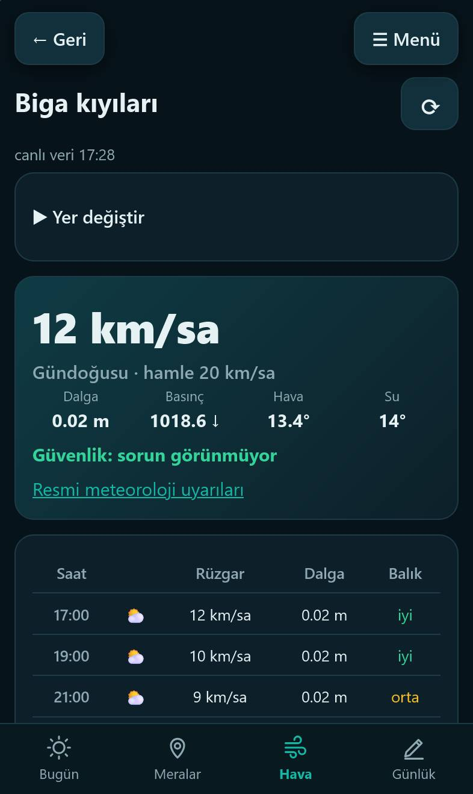
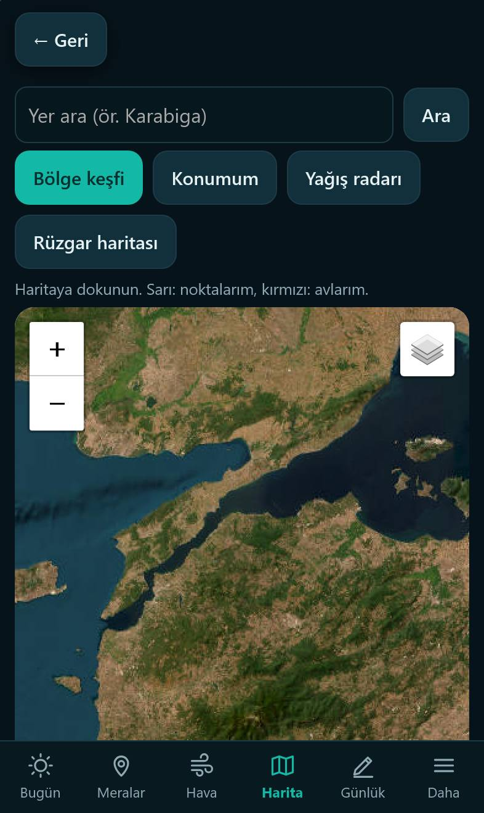
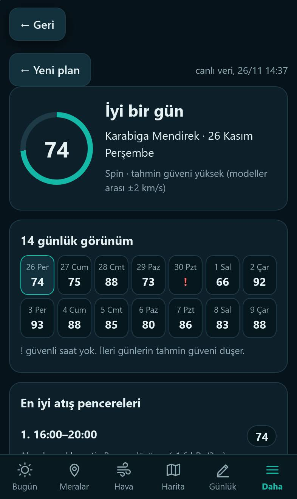
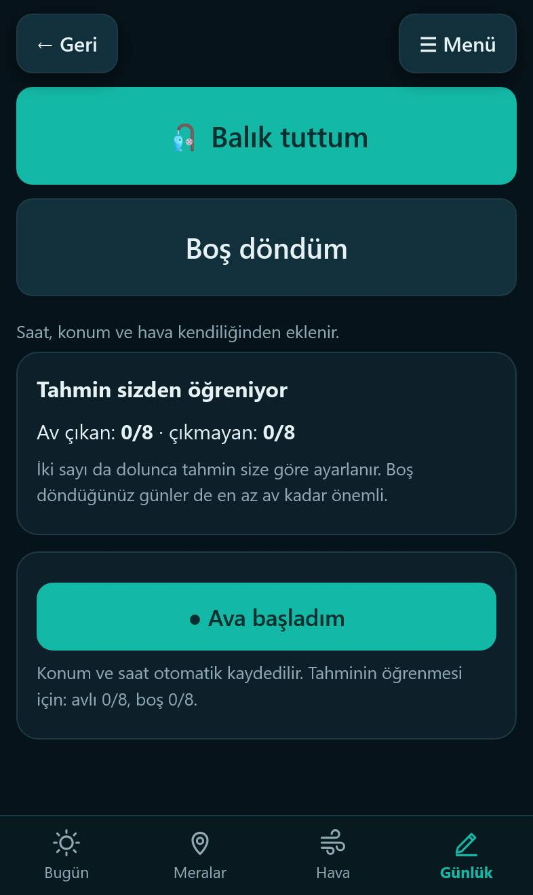

KILÇIK Kullanım Kılavuzu
Kıyıdan balık avı için nerede, saat kaçta ve hangi balık sorularına yardım eden planlama uygulaması. Ücretsizdir; üyelik istemez.
1. Kurulum ve güncelleme
Telefon
Adres: https://inanhakann-cell.github.io/kilcik/
| Telefon | Adımlar |
|---|---|
| iPhone | Adresi Safari’de açın → Paylaş (kare ve yukarı ok) → Ana Ekrana Ekle → Ekle. |
| Android | Adresi Chrome’da açın → sağ üstte ⋮ → Uygulamayı yükle veya Ana ekrana ekle. |
İlk açılışta üç kısa soru gelir: konum, takımınız ve hedef balık. Sonradan Menü → Başlangıç tercihleri ile değiştirirsiniz. Konum izni sorulunca izin verin.
Android’de simgeye basılı tutunca Meraları bul, Av günlüğü ve Hava kısayolları çıkar.
Arkadaşlarınıza göndermek
WhatsApp’tan şu bağlantıyı yollayın: https://inanhakann-cell.github.io/kilcik/kur.html. Sayfa telefonu tanır: Android’de çoğunlukla tek düğmeyle yüklenir, iPhone’da üç adımı gösterir. Herkesin kayıtları kendi telefonunda ayrıdır.
Bilgisayar
Masaüstündeki balık simgeli KILÇIK kısayoluna çift tıklayın.
Güncelleme
Güncellemeden sonraki ilk açılışta “Uygulama güncellendi” notu bir kez çıkar; Menü → Yenilikler ile yeniden okuyabilirsiniz.
Yeni sürüm kendiliğinden gelir. Eski ekran görünürse uygulamayı tamamen kapatıp yeniden açın (gerekirse iki kez).
2. Hızlı başlangıç
- Bugün ekranına bakın: gidilir mi, nereye, saat kaçta, hangi balık ve yem.
- Beni oraya götür ile yönlendirilin.
- Merada Ava başladım’a basın; balık tuttukça kaydedin, dönerken Avı bitir.
- Sonradan kaydetmek için Günlük → Balık tuttum veya Boş döndüm.
- Başka yer arıyorsanız Meralar.
3. Ekran düzeni
| Düğme | Ne işe yarar |
|---|---|
| Bugün | Günün cevabı: nereye, ne zaman, hangi balık. |
| Meralar | Üstte üç bölüm: Harita, Liste (kıyı taraması) ve Noktalarım. |
| Hava | Şu anki rüzgar ve saatlik özet; ayrıntılar katlanmış bölümlerde. |
| Günlük | Hızlı av kaydı, istatistikler ve tahmin sınaması. |
| ☰ Menü (üstte) | Av planla, Noktalarım, Kayıtlı planlar, Takım çantam, Tür rehberi, Ayarlar, başlangıç tercihleri, meteoroloji uyarıları, görünüm ve bu kılavuz. |
Başında ▶ olan satırlara dokununca ayrıntı açılır. Önceki ekrana dönmek için ← Geri düğmesini veya telefonun geri hareketini kullanın. Bilgisayarda menü soldadır.

Görünüm
Menü → Görünüm: güneş altında okumak için Gündüz (açık) teması ve Büyük yazı.
4. Puan ve güvenlik renkleri
Ekranlarda puan sözle gösterilir: çok iyi (80 ve üstü), iyi (65–79), orta (45–64), zayıf (45 altı). Sayı, “Ayrıntı” bölümlerindedir.
Puan (0–100) koşulların balığa ve avcılığa ne kadar uyduğunu gösterir. Etkenler: günün saati, solunar dönem, basınç eğilimi, rüzgar, dalga, denizin son durumu, su hareketi (gelgit), gökyüzü, su sıcaklığı değişimi, ay evresi, hedef tür ve kendi av geçmişiniz.
| Güvenlik | Anlamı |
|---|---|
| Gidilir | Verilere göre belirgin sorun yok. |
| Dikkat | Sert hamle (yaklaşık 46 km/sa ve üstü), sınıra yakın dalga, uzun periyotlu ölü dalga, denizden esen sert rüzgar, yoğun sis, don, karanlık veya eksik dalga ölçümü. |
| Gitme | Gök gürültülü fırtına, rüzgar veya dalga sınırınızın üstünde ya da yaklaşık 63 km/sa ve üstü hamle. |
| Bilinmiyor | Rüzgar/dalga verisi eksik veya veri 3 saatten eski. Karar verilmez. |
Başlangıç sınırları: rüzgar 41 km/saat, dalga 1,25 m. Ayarlar’dan değiştirebilirsiniz. Saat çubuklarında yeşil “gidilir”, sarı “dikkat”, kırmızı “gitme” demektir; çubuk yükseldikçe puan artar.
5. Bugün

| Bölüm / düğme | Ne işe yarar |
|---|---|
| Yer adı ▾ (üstte) | Bölge arama, Konumum ve İnternetsiz için indir. |
| ⟳ | Veriyi yeniden alır. Uygulama açıkken yaklaşık 30 dakikada bir kendisi de yeniler. |
| Bugün / Yarın / Hafta | Günü seçer; “Hafta” en iyi gün ve saatleri sıralar. |
| Büyük kart | Karar, en uygun yer, en iyi saat, öne çıkan balıklar, yem, şu anki rüzgar ve güvenlik uyarısı. Hedef balık seçtiyseniz saat ona göredir. |
| Beni oraya götür | Canlı mesafe ve yön. |
| Ayrıntı | Puan, koordinat, saat çubukları, puanın nedenleri, bütün balıklar, Ayrıntılı plan, Haritada, Kaydet, Arkadaşıma gönder ve dip işaretleme. |
| Başka yerler | Sıradaki üç seçenek. |
| Tüm meralar / Hava ayrıntısı | İlgili ekrana götürür. |
6. Ava başladım (hızlı kayıt)

- ● Ava başladım (Bugün veya Günlük ekranında): konum ve saat otomatik alınır.
- Balık tutunca tür, boy ve yemi yazıp Balık tuttum’a basın. Geri bıraktıysanız işaretleyin. Boy veya yasak sınırına takılan kayıtta uyarı çıkar.
- Avı bitir: balık yoksa “Av çıkmadı” olarak kaydetmek isteyip istemediğiniz sorulur. Vazgeç oturumu iptal eder; kaydedilmiş balıklar silinmez.
Merada internet yoksa kayıt yine yapılır; o saatin hava bilgisi internet gelince tamamlanır.
7. Meralar: liste

| Ayar / düğme | Ne işe yarar |
|---|---|
| Biga ve çevresi: tüm kıyı | Şevketiye–Misakça arasındaki ana kara kıyısını tarar. |
| Başka bölge ve ayarlar | Bugün/Yarın, Kıyıdan/Tekneden, başka yer arama, yarıçap (5–45 km), adaları ve karşı kıyıyı dahil etme. |
| Süz ve dışa aktar | Sıralama, yalnız bakir adayları (yaklaşık 1,2 km içinde kayıtlı yerleşim, iskele veya olta yeri olmayanlar), tümü haritada ve GPX. |
İlk tarama internet hızına göre birkaç dakika sürebilir; sonuçlar hemen listelenir, dip bilgisi ve yer adları geldikçe tamamlanır. Aylık balık takvimi, yöre yazıları ve fotoğraflar en alttaki Bilgi bölümündedir.
Bir noktayı açınca

| Bilgi | Anlamı |
|---|---|
| Uyarılar | Güvenlik; yakında liman, marina, sanayi veya askeri alan kaydı varsa av yasak veya erişime kapalı olabilir. |
| Balık satırları | Tür, önerilen saat, değerlendirme ve yem. |
| Beni oraya götür / Haritada / Kaydet / Arkadaşıma gönder | Noktayla ilgili ana işlemler. |
| Dip ve derinlik | Kıyıdan 100–1000 m derinlik, dip türü, derinlik yapısı ve kendi dip işaretiniz. |
| Diğer | Balık noktası ve kıyıdaki durma noktası koordinatları, yol tarifi, hava, av ekleme, “Gittiniz mi? 👍 👎 ⛔” işaretleri. |
Dip işaretleme
Gittiğiniz yerde kum, taş / kaya, yosun / erişte, derin düğmelerine dokunun. Ücretsiz verinin görmediği kıyı dibini böyle siz kaydedersiniz. İşaretler yalnızca sizde saklanır ve puanı değiştirmez.
Arkadaşıma gönder
Noktanın bağlantısını WhatsApp veya mesajla yollar. Alan kişi dokununca “eklensin mi?” sorulur.
8. Noktaya götür

- Kalan mesafeyi ve yönü canlı gösterir; vardığınızda “Noktadasınız” yazar.
- Yürürken ok gidiş yönünüze göredir. Dururken telefonun üstü kuzeye bakıyormuş gibi gösterilir.
- Ekranı açık tutmaya çalışır; pil tüketimi artar. İşiniz bitince Kapat.
9. Hava

Üstte şu anki rüzgar, hamle, dalga, basınç, hava ve su sıcaklığı, güvenlik kararı ve saat saat özet vardır. Yer değiştir ile başka yer seçin; Bu nokta için av planı doğrudan plana geçer.
| Açılır bölüm | İçerik |
|---|---|
| Saatlik tahmin | Windy benzeri tablo; saatlik veya 3 saatlik. |
| Şu anki tüm veriler | Rüzgar (km/sa ve knot), basınç, yağış, görüş, dalga, ölü dalga, akıntı, gelgit, ay, gün doğumu ve batımı. |
| Balık için koşullar | Etkenler ve 3,60 m’lik küçük bot için ayrı uyarı. |
| Gelgit ve ay | Su seviyesi grafiği, çekilme/kabarma saatleri, 7 günlük ay tablosu. |
| Tahmine ne kadar güvenilir? | Üç hava modeli (ECMWF, GFS, ICON) birbirine yakınsa güven artar. |
| Rüzgar haritası (Windy) | Rüzgar, hamle, yağış, basınç, sıcaklık, dalga, su sıcaklığı, bulut. İnternet gerekir. |
10. Meralar: harita

- Bu kıyıyı tara: ekranda görünen alandaki noktaları bulur. Küçük bir koyu incelemek için yakınlaştırıp basın.
- Haritada bir yere dokunun: Hava durumu, Noktaya götür, Burada planla, Noktayı kaydet, Buraya av ekle, Arkadaşıma gönder, Yol tarifi.
- Numaralı işaretler son taramadır (yeşil iyi, sarı orta, gri zayıf). Sarı küçük işaretler noktalarınız, kırmızı işaretler avlarınızdır. Altta en iyi üç nokta listelenir.
- Sağ üstten Uydu / Harita ve Deniz işaretleri; altta Konumum, Yağış radarı, Rüzgar okları.
11. Av planla

- Nerede: Konumum, haritadan veya kayıtlı noktalardan.
- Ne zaman: gün (14 güne kadar) ve isterseniz hedef tür.
- Gerekirse Su ve teknik bölümünü açın: Spin, Hafif spin, LRF, Shore jig, Dip/surf, Şamandıra, Kalamar (egi), Fly.
- Planı oluştur.
| Sonuç bölümü | Ne gösterir |
|---|---|
| Üst kart | Günün değeri, en iyi saat, güvenlik, yönlendirme, planı kaydetme, takvim hatırlatması, noktayı gönderme. |
| Hangi balık, saat kaçta? | Öne çıkan üç tür, yem ve yasal sınır. |
| 14 gün | Bir güne dokunarak değiştirin. “!” güvenli saat olmadığını gösterir. |
| Atış saatleri ve yorum | Saat aralıkları, kurallara dayalı yorum, metin veya görsel paylaşım. |
| Bütün balıklar ve yöre kayıtları | Tüm tür sıralaması ve yaklaşık 40 km içindeki gözlemler. |
| Grafikler / Ayrıntılı veriler | Saatlik puan ve 3 günlük eğilimler; saat saat tüm değerler ve puanın nedenleri. |
| Hazırlık listesi | Tekniğe göre yanınıza alacaklarınız. |
| Yapay zekâya sor | İsteğe bağlı; kendi Gemini anahtarınız gerekir. “Soruyu kopyala” başka bir yapay zekâya yapıştırmak içindir. |
12. Av günlüğü

- Balık tuttum: türe dokunun, isterseniz fotoğraf ekleyin, Kaydet. Saat ve konum kendiliğinden gelir. Boy, ağırlık, adet, yem, saat, yer ve not alttaki bölümdedir.
- Boş döndüm: iki dokunuşta kaydedilir.
- Fotoğraftan türü tahmin et: Gemini anahtarı ister; yanılabilir.
- İstatistik, rekorlar ve tahmin isabeti bölümünde: tür, nokta, yem ve saat dilimine göre dağılım. Rekorlarım en büyük balıklarınızdır.
- Her kayıtta Paylaş (görsel kart), Düzenle, Sil.
- Avlarımla sına: geçmiş avlarınızın gününü gerçek hava verisiyle yeniden puanlar; tahmin sizde işe yarıyor mu gösterir. Anlamlı sonuç için en az 20–30 av gerekir.
- Tahmin sizden öğreniyor: en az 8 avlı ve 8 boş kayıt olunca puan ağırlıkları size göre ayarlanır. Bir noktanın yakınında 5 veya daha fazla av olunca saat alışkanlığınız da hesaba katılır.
13. Noktalarım
- Meralar → Noktalarım. Haritadan ekle, Bağlantıdan ekle veya Bugün, Meralar ve Harita ekranlarındaki kaydet düğmesiyle nokta ekleyin.
- Her noktada Planla, Haritada, Yol tarifi, Noktaya götür, Düzenle, Sil, Arkadaşıma gönder ve dip işaretleme.
- Fırsat taraması (7 gün): noktalarınız için haftanın en iyi gün ve saatlerini sıralar; ilk 10’u takvime eklenebilir.
- GPX indir: noktaları başka harita veya GPS cihazına aktarır.
- Biga–Bozcaada örnekleri: hazır 10 nokta. Koordinatları doğrulanmamıştır; bazıları karada olabilir.
14. Kayıtlı planlar ve takım çantası
Kayıtlı planlar: “Güncel veriyle aç” planı yeni hava verisiyle hesaplar. Listede görünen puan, kaydettiğiniz andaki puandır.
Takım çantam: kamış, makine, misina, yem ve hazır takımlarınızı yazın. “Takım” türündekiler plan ekranında seçilir; yem adları av eklerken önerilir.
15. Tür rehberi
Deniz ve tatlı su türleri: mevsim ayları, yem, en verimli saat, su sıcaklığı, uygun teknik, asgari boy ve av yasakları. Fotoğraf göster ve Bu tür için planla düğmeleri her kartta vardır.
16. Ayarlar ve yedek
| Bölüm | Ne işe yarar |
|---|---|
| Güvenlik sınırları | Kabul ettiğiniz en yüksek rüzgar ve dalga. Deneyiminize göre düşük tutun. |
| Bildirimler | Seçtiğiniz puanı geçen fırsatlar ve plan günleri. Yalnızca uygulama açıkken çalışır. |
| Yapay zekâ (isteğe bağlı) | Google AI Studio’dan kendi ücretsiz anahtarınız. Yalnızca cihazda durur, yedeğe girmez. Ücretsiz kullanımda gönderilenleri Google ürün geliştirmede kullanabilir. Anahtarınızı kimseyle paylaşmayın. |
| Yedek indir / Yedek yükle | Nokta, av, plan, takım ve dip işaretlerini dosyaya alır; yüklerken mevcut kayıtlara ekler. Kayıt biriktiğinde iki haftada bir yedek hatırlatılır. |
| Konumumu yakınlarıma gönder | Konumunuzu paylaşmak için hazırlar. Merada yalnızsanız kullanın. |
Bilgisayardan telefona kayıt taşıma
- Bilgisayarda Ayarlar → Yedek indir.
- Dosyayı Google Drive gibi bir yolla telefona alın.
- Telefonda Ayarlar → Yedek yükle.
Av bildirimi (uygulama kapalıyken de)
Uygulama açılışta bir kez izin sorar; İzin ver veya İzin verme seçin. Sonradan Menü → Av bildirimi panelinden değiştirebilirsiniz. Yarın balığa değerse akşam 19:00’da saat aralığı, sebepleri, rüzgar ve dalga, balık ve yem yazan bir bildirim gelir. Günde en fazla bir kez; güvenli olmayan günlerde gelmez. “İyi günler” veya “Yalnız çok iyi günler” seçilebilir. Bölge, Bugün ekranında seçili olan yerdir; bölgeyi veya hedef balığı değiştirince Bölgeyi ve ayarı güncelle düğmesine basın. iPhone’da uygulama ana ekrana eklenmiş olmalıdır (iOS 16.4 veya üstü). Deneme bildirimi gönder ile hemen sınayabilirsiniz.
17. İnternetsiz kullanım
- Yola çıkmadan internetliyken uygulamayı açın; Bugün ekranında yer adına dokunup İnternetsiz için indir’e basın.
- Uygulama ve kayıtlarınız internetsiz açılır. Kayıtlı tahmin 24 saate kadar görülebilir.
- Veri 3 saati geçince güvenlik kararı verilmez.
- Uydu/harita görüntüsü, radar, Windy ve yeni arama internet ister. “Noktaya götür” GPS ile çalışır.
Yakın yer satırı, noktaya en yakın yerleşimi kuş uçuşu uzaklığıyla gösterir; yol mesafesi daha uzun olabilir.
Dip bilgisi nasıl okunur?
Dip (yaklaşık) satırında “kıyı …” haritada işaretli kıyı yapısıdır ve yalnızca işaretli yerlerde görünür. “Açıkta …” örneklerden üretilmiş 1:100.000 haritadır; tek kaya, batık ve yosun lekesi göstermez. Satır yoksa o yer için veri yoktur.
18. Veriler ve gizlilik
| Veri | Kaynak |
|---|---|
| Hava, deniz, yükseklik, yer arama | Open-Meteo |
| Derinlik ve dip yapısı | EMODnet (Avrupa deniz veri ağı); 1:100.000 tortu haritası IMST / Dokuz Eylül Üniversitesi verisi |
| Kıyı yapısı (kumsal, çakıl, kayalık) | © OpenStreetMap katkıcıları (ODbL) |
| Kıyı çizgisi, yerleşim, iskele, alanlar | © OpenStreetMap katkıcıları (ODbL) |
| Balık gözlemleri ve fotoğraflar | iNaturalist |
| Harita görüntüsü, radar, katmanlar | Esri, OpenSeaMap, RainViewer, Windy |
| Klorofil (yalnız bilgisayar) | NOAA uydu verisi |
Av günlüğünüz ve noktalarınız cihazınızda saklanır; kayıtlarınız hiçbir sunucuya gönderilmez. Yalnızca av bildirimini açarsanız bildirim sunucusu telefonunuzun bildirim adresini, seçili bölgenin adını ve yaklaşık konumunu, hedef balığı, tekniği ve eşiği saklar; Kapat düğmesi bu kaydı siler. Bir yerin verisi istenirken o yerin koordinatı ilgili servise gider. Yapay zekâyı kullanırsanız sorunuz, plan verisi, koordinat veya seçtiğiniz fotoğraf Google’a gönderilir.
19. Sorun giderme
| Sorun | Çözüm |
|---|---|
| “Konum alınamadı” | Telefon ayarlarından konumu ve tarayıcının/uygulamanın konum iznini açın; açık havada deneyin. |
| “Servis yanıt vermiyor” / “servis dolu” | Ücretsiz sunucular bazen yoğundur. Bir iki dakika sonra yenileyin. |
| “Veri … saat önce alınmış” | İnternete bağlanıp ⟳ basın. |
| Mera listesinde dip bilgisi eksik | Servis yavaş olabilir; bekleyin veya sonra yeniden tarayın. Bazı yerlerde ölçüm yoktur. |
| Eski ekran görünüyor | Uygulamayı tamamen kapatıp iki kez açın. |
| Bildirim gelmiyor | Menü → Av bildirimi’nden açın ve telefonun bildirim iznini kontrol edin. Koşullar eşiğin altındaysa gönderilmez; “Deneme bildirimi gönder” ile sınayın. Ayarlar’daki fırsat bildirimi yalnızca uygulama açıkken çalışır. |
| Kayıtlar telefonda görünmüyor | Cihazlar ayrıdır; yedek ile taşıyın. |
20. Küçük sözlük
| Terim | Anlamı |
|---|---|
| Hamle | Rüzgarın ani en yüksek değeri. |
| Knot (kt) | Denizci hız birimi; 1 kt = 1,85 km/saat. |
| Dalga periyodu | İki dalga arasındaki süre. Uzun periyot kıyıda daha güçlü dalga demektir. |
| Ölü dalga | Uzaktaki rüzgardan gelen dalga. |
| Solunar | Ayın konumuna göre varsayılan hareketli saatler; bilimsel kanıtı sınırlıdır. |
| Atış penceresi | Koşulların en uygun olduğu saat aralığı. |
| Bakir adayı | Yakınında haritada kayıtlı yapı ve yerleşim görünmeyen nokta; kimsenin gitmediği anlamına gelmez. |
| Spin / LRF / Shore jig / Egi | Sahteyle at-çek; çok hafif takımla at-çek; kıyıdan metal jig; kalamar yemlemesi. |
| GPX | Koordinatları harita ve GPS cihazlarına taşıyan dosya. |
Rastgele!
← Uygulamaya dön